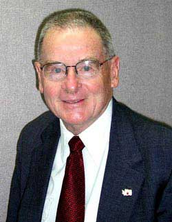

Lynn Buchanan

This website serves to maintain my internet presence, and share some information from time to time.
Lynn Buchanan
115 West D Street
Yakima, Washington 98902
Lynn at LynnBuchanan.com
509 248 6841
Businessman - BuchananWarehouse.com
...Married to Connie Buchanan
Pilot, certified flight instructor
Air Force Lt. Col. (retired)
Mountain Rescue member
...In the field from 1952 to 2009 - 58 years active in the field
...Past national president, Mountain Rescue Assn.
...Past president, Washington Mountain Rescue Assn.
...Past president, Central Washington Mountain Rescue Assn.
...Elected Honoray Member, Seattle Mt. Rescue, 2011, one of only
6 in their history
Mountain climber
...Member and former board member, American Alpine Club
......Joined back when one's climbing qualifications were reviewed
before being invited to join
Former Mayor, City of Yakima
Longest serving Councilmember, Yakima City Council
Active bicyclist
Retired National Ski Patrolman, 33 years of volunteer service
Reserve Officer, Yakima Police Department, Retired
Special Deputy, Yakima Sheriff's Department
Former Deputy Coroner, Yakima County Coroner's office
Kiwanis member since 1959
...President and several Board terms
......Elected again for the 2012 Board term
...Legion of Honor, 1996
...Hixon award, 2008
Past Volunteer Service:
Board member, Ghormley Meadows Christain Camp
Forensic Advisory Committee: Appointed by Governor Lowry and Governor Locke for 3 terms of 3 years each for oversight committee on operations and financing of the Washington State Crime labs under the Washington State Patrol, representing the East side cities of the State.
Board of Directors: Washington Association of Cities.
Board Member: McAllister Museum, Yakima.
Treasurer: Yakima Rifle and Pistol Club.
Board Member: Yakima Sportsman's Association.
Chairman and Committee Member: Washington State Department of Transportation Bicycling Advisory Committee, 1984, Served 3 three year terms. First Committee Chairman.
Chairman: Yakima Board of Health, 1986, served 8 years on the Board.
Member of the Washington State MAST (Military Assistance to Safety & Traffic) Committee from the early '70's to 1982, Chaired the National Conference in Seattle, Chairman 1975 to 1982.
Certificate of Appreciation from then Governor Evans for service in coordinating the work of civilians and the military to save lives, 1975.
Certificate of Appreciation from the 54th Med. Det., Ft. Lewis, for actions on a Medical Evacuation Helicopter on a MAST Mission.Aug 1979. Participated in over 50 Helicopter rescue missions.
USAF Reserve Liaison officer representing the US Air Force Academy finding and counseling Academy applicants from Yakima and Kittitas Counties. 18 years. Outstanding Liaison Officer (22 State region), 1976.
Conservation and Natural Resources Committee for the Yakima Training Center, 1996 to 2003.